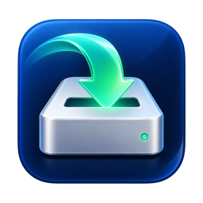

反馈主题 · 插盘操作太重复
记住每块盘的选择
做了什么：0.2.0起可保存下次插入时的只读或读写选择，并可选登录启动。关窗继续工作，退出应用后停止。
怎么用：在磁盘详情选择“下次插入此盘”，再在设置打开自动管理并确认当前会话。
边界：默认关闭；遇到其他驱动、身份或会话不明会暂停。不是已经完成20轮实盘或真实登录全部验收。

把查看磁盘、选择只读或读写、打开Finder和正常卸载，放在一个原生界面里。第一次开源后，我们收到了不少关注和建议，也沿着这些反馈继续改进。
这是兼容预览，本机实盘仍未通过。 macOS26.6.2的构建11挂载返回69，未新增测试文件、未完成实盘读写。Intel通用包和最低macOS13是运行目标，Intel实体与13／14实体兼容链仍未验收。
从第一次开源到0.3.1，逐项回应大家关心的旧Mac、逐盘设置、数据保护和下载。影片结合本轮0.3.1（11）的设置、逐盘规则和诊断真实录屏，以及历史0.1.1镜像操作与功能图解。历史片段始终标注版本；本次录制没有开启自动管理或挂载磁盘。
以下是已收集反馈的主题归纳，不是评论逐字引用。每一项都说明做了什么，也保留没有完成的部分。
反馈主题 · 插盘操作太重复
做了什么：0.2.0起可保存下次插入时的只读或读写选择，并可选登录启动。关窗继续工作，退出应用后停止。
怎么用：在磁盘详情选择“下次插入此盘”，再在设置打开自动管理并确认当前会话。
边界：默认关闭；遇到其他驱动、身份或会话不明会暂停。不是已经完成20轮实盘或真实登录全部验收。
反馈主题 · Intel和旧Mac能不能用
做了什么：0.3.0已提供Intel／Apple Silicon通用包，主程序和兼容前端最低macOS13；这不是0.3.1首次新增。
怎么用：下载同一个通用包。13～15.3需要本人另装并批准官方macFUSE。
边界：Intel实体机与旧系统实体兼容链未验；13／14 Apple虚拟机不能使用这条内核路径，不能把安装成功当作读写通过。
反馈主题 · 系统没列出扩展就被挡住
做了什么：0.3.1在macOS15.4起，查询成功但没列出模块时，允许用户手动尝试正常挂载。
怎么用：按安装说明批准扩展和服务后，手动选择只读或读写；系统拒绝时保留错误。
边界：允许尝试不等于已经启用。明确关闭、查询错误、等待和自动管理门槛不放宽；本机26.6.2仍有系统发现阻断。
反馈主题 · 显示可写，真的准备好了吗
做了什么：需要内部准备的路径，未完成时显示“写入未就绪”；刷新或重新挂载不会沿用旧成功。
怎么用：看清当前状态再操作；出现未就绪或错误时停止继续写入，保留诊断。
边界：写入前检查被拒时，只在原只读仍存活的阶段保留可读。进入写入后的真实故障不在这个保证里。
反馈主题 · 用完能否正常卸载
做了什么：0.3.1完善旧系统的正常卸载收尾，区分目录缓存和真实文件占用，保留同步与关闭错误。
怎么用：完成后正常卸载；要拔盘时安全推出整盘，等到明确结果再断开。
边界：不强制卸载。历史构建10的15.4镜像完整链通过，不移植为构建11同包实测；系统错误是否全部返回界面仍有限制。
反馈主题 · 说明难看全，源码难找到
做了什么：0.3.1完善设置／诊断滚动和导出，修复源码首次构建与工具入口；下载同页提供对应源码和核验材料。
怎么用：在设置或诊断中滚动到底；普通使用下载DMG或ZIP，需要研究时再取完整源码。
边界：公证和源码可查不等于所有硬盘已验证。历史功能记录也不等于速度成绩。
下面是此前版本在专用测试镜像上的真实录屏，等待过程已加速并标注。它不是0.3.1实盘验收录像，也不代表新Mac首次安装或所有硬盘通过。
应用免费开源，采用GPL-2.0许可。自动管理默认关闭。13～15.3的第三方运行时不随包分发，可能需要本人按官方流程批准组件和调整启动安全；应用不会自动修改系统保护。GitHub仓库
历史影片中的Paragon价格于2026-10-25核验，地区、税费及后续变化以对方官网结算为准；该画面不是性能对比。
更新片配乐为《一道流动的写入》原创选段。钢琴：Salamander Grand Piano V3／Alexander Holm，电钢琴：Greg Sullivan（CC BY 3.0，经处理）；其他采样：Versilian Studios、FreePats、Karoryfer Samples等。更新片使用概念封面，镜头方法参考video-shotcraft（Apache-2.0）。
历史影片配乐为原创，采样署名：Salamander Grand Piano V3 by Alexander Holm（CC BY 3.0）、Versilian Studios VSCO 2 CE、FreePats、Karoryfer Samples（CC0）。字体：Noto Sans SC、Inter、JetBrains Mono（SIL OFL 1.1）。